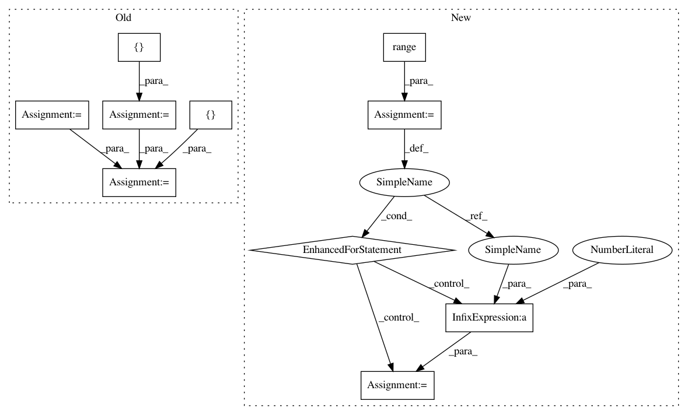

77bd6e143eaab400f3117519e0178e0a3cba9f7b,cellprofiler/modules/colortogray.py,ColorToGray,display_split,#ColorToGray#Any#Any#,367
Before Change
title="Original image")
if ndisp == 1:
layout = [(0, 1)]
elif ndisp == 2:
layout = [(1, 0), (0, 1)]
else:
layout = [(1, 0), (0, 1), (1, 1)]
for xy, disp in zip(layout, disp_collection):
figure.subplot_imshow(xy[0], xy[1], disp[0],
title="%s image" % (disp[1]),
colormap=matplotlib.cm.Greys_r,
sharexy=figure.subplot(0, 0))
def prepare_settings(self, setting_values):
"""Prepare the module to receive the settings
setting_values - one string per setting to be initialized
After Change
figure.subplot_imshow(0, 0, input_image,
title="Original image")
for eachplot in range(ndisp):
placenum = eachplot +1
figure.subplot_imshow(placenum%ncols, placenum/ncols, disp_collection[eachplot][0],
title="%s" % (disp_collection[eachplot][1]),
colormap=matplotlib.cm.Greys_r,
sharexy=figure.subplot(0, 0))
def prepare_settings(self, setting_values):
"""Prepare the module to receive the settings
setting_values - one string per setting to be initialized
In pattern: SUPERPATTERN
Frequency: 3
Non-data size: 10
Instances
Project Name: CellProfiler/CellProfiler
Commit Name: 77bd6e143eaab400f3117519e0178e0a3cba9f7b
Time: 2017-06-03
Author: bethac07@users.noreply.github.com
File Name: cellprofiler/modules/colortogray.py
Class Name: ColorToGray
Method Name: display_split
Project Name: CellProfiler/CellProfiler
Commit Name: 77bd6e143eaab400f3117519e0178e0a3cba9f7b
Time: 2017-06-03
Author: bethac07@users.noreply.github.com
File Name: cellprofiler/modules/colortogray.py
Class Name: ColorToGray
Method Name: display_split
Project Name: flow-project/flow
Commit Name: 67f6d47d9e61f28d455319c868c38fbc11e73366
Time: 2018-02-22
Author: eugenevinitsky@wirelessprvnat-172-16-134-167.near.illinois.edu
File Name: flow/scenarios/bridge_toll/gen.py
Class Name: BBTollGenerator
Method Name: specify_connections
Project Name: flow-project/flow
Commit Name: 4956dc485f78ef2b7c5f4a13f8abb7a24cfbb1bb
Time: 2018-09-16
Author: vinitsky.eugene@gmail.com
File Name: flow/scenarios/highway/gen.py
Class Name: HighwayGenerator
Method Name: specify_nodes